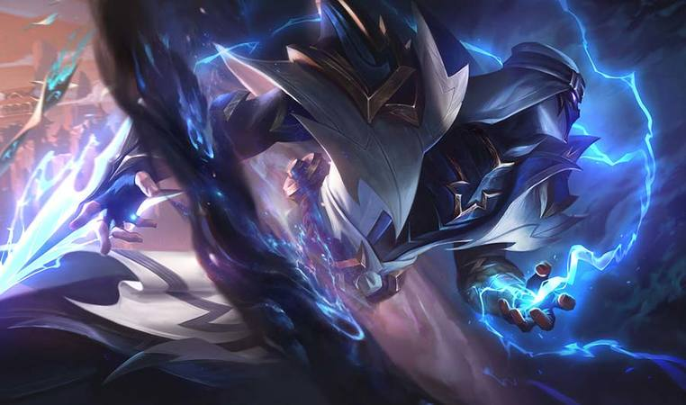

Voce conhece as skins mais famosas dos monos Kassadins?
Os famigerados Mono Kassadin tem algo em comum e diferente de pessoas que jogam com o boneco por querer counter pickar um mago ou simplesmente ser main dele, que são as Skins
Por que?
Os Mono Kassadin sao reconhecidos e facilmente notados na partida no seu time ou no time inimigo, por comportamentos, uso de emojis, e principalmente as Skins porque eles usam Skins especificas, sendo uma principalmente reconhecida, que atualmente virou praticamente a skin padrão do campeão.
E qual são elas?
Bom, é isso que vamos te mostrar aqui neste artigo. Existe uma grande diferença de skins mais usadas para skins de mono champion, e isso existe em varios bonecos como por exemplo o Yasuo, que a skin mais jogada é Yasuo Emissário da Escuridão, mas a skin considerada de Mono pela maioria dos Mono Yasuo é a Yasuo Velho Oeste.
Skins Mais Usadas por Monos
Kassadin Rapinante Cósmico
Essa skin é clássica, podendo ser comprada na loja (Skin Padrão) por 1350RP. Sendo a mais usada, a melhor do Kassadin para 99% dos fieis jogadores do campeao. Ela possui poderosos efeitos visuais, temática incrivel combinando totalmente com o boneco e deixando praticamente obrigatório tê-la.
Conde Kassadin
Skin Vampiro do Kassadin (Skin Festiva), custando 1350RP, tendo o segundo lugar nas skins mais usadas do campeão, essa skin foi famigerada pelo jogador/streamer Yiok, por ser o Mono Kassadin mais famoso do Brasil, alcançando a marca de top 5 do Brasil na temporada 12. Ele usa ela como foto de perfil em todas as suas redes sociais. A skin tem temática de Halloween, seus efeitos de canalização, habilidades tem efeitos de morcegos e abóboras, dando uma experiência unica de Dia das Bruxas
Kassadin Lâmina do Trovão
Sendo a mais recente skin do Kassadin, custando 1350RP (Skin Padrão) ela ainda sim alcançou a marca de 3° lugar, ultrapassando a skin antiga de Kassadin, Kassadin Emissário das Trevas. Ela é nova, e isso faz com que os efeitos dela tenham aparência de um boneco totalmente novo, com temáticas unicas, efeitos visuais fortes e combinando com outros campeões da mesma temática, como Zed Lâmina do Trovão.
Então é isso, agora você sabe as skins mais usadas por Mono Kassadin do servidor Brasileiro de League of Legends, espero que tenha gostado, um abraço, e até a próxima!